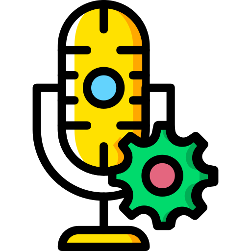

- Generated by
 1.9.6
1.9.6
|  |
VoiceAssistant
main
Resource-efficient, customizable voice assistant
|
~Download VoiceAssistant from here~
Not available yet! Follow the build instruction down below and run cmake --install .
Needed Qt modules: base, multimedia and speech.
apt-get install qtbase5-dev qtdeclarative5-dev qttools5-dev qtmultimedia5-dev libqt5texttospeech5-dev libqt5svg5-dev qt5ct dnf install qt5-qtbase-devel qt5-qtdeclarative-devel qt5-qttools-devel qt5-qtmultimedia-devel qt5-qtspeech-devel qt5-qtsvg-devel pacman -S qt5-base qt5-declarative qt5-tools qt5-multimedia qt5-speech qt5-svggit clone https://github.com/tim-gromeyer/VoiceAssistant --depth=1 --recurse-submodulesBuild it (requires CMake 3.13 or above)
git clone https://github.com/tim-gromeyer/VoiceAssistant --depth=1 --recurse-submodulesBuild it (requires CMake 3.13 or above)
Clone the repo (requires git)
git clone https://github.com/tim-gromeyer/VoiceAssistant --depth=1 --recurse-submodules
Build it